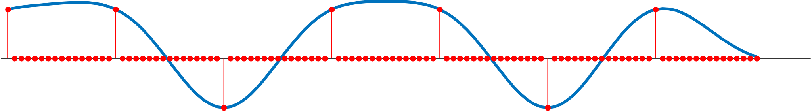
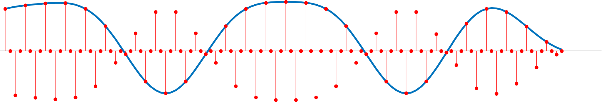
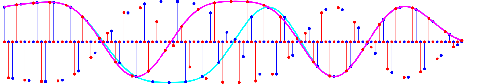

Lab 6 Primer¶
Most modern digital communication systems, including standards like 802.11 (WiFi), use quadrature amplitude modulation (QAM). In contrast to PAM, which only encodes information in the amplitude, QAM additionally makes use of the phase.
What is QAM?¶
To understand QAM, let us revisit the modulation component of PAM. This time, we will look at the transmission of a single ASCII character ‘m’.
>> serialized_data = reshape((dec2bin(uint8('m'))'),[1,7])
serialized_data =
'1101101'
upsampled_data = upsample(str2num(serialized_data')*2-1,16);
pulse_shaping_filter = rcosdesign(0.8,4,16,'normal');
sequence_of_pulses = conv(upsampled_data,pulse_shaping_filter,'same')
figure; plot(sequence_of_pulses); hold on; stem(upsampled_data.*max(pulse_shaping_filter));

Recall that in lab 5, the sequence of pulses was multiplied by a cosine. In particular, we used a cosine whose frequency was one quarter the sampling frequency
f0 = 12000; fs = 48000; w0 = 2*pi*f0/fs; n = 1:length(sequence_of_pulses);
modulated = sequence_of_pulses.' .* cos(w0*n);
figure; plot(sequence_of_pulses); hold on; stem(modulated);

Notice that every other sample is zero. What if we had used a sine instead?

Whenever the cosine is nonzero, the sine is zero, and whenever the sine is nonzero, the cosine is zero. This simple observation relates to an important fact that sines and cosines form an orthonormal set.
We can exploit this by modulating one stream of data with a cosine, modulating a second stream with a sine, and adding them together. Let’s assume that ‘m’ will be modulated by a cosine and our second stream of data is the ASCII character ‘e’, which will me modulated by a sine.

If we look closely at these two signals, we see why QAM works. Normally, when we add two signals together, it is very difficult to separate them. It is only because of the orthogonality of sine and cosine that we can easily separate the two components at the receiver. This lets us transmit twice as much data without increasing the bandwidth or symbol rate.